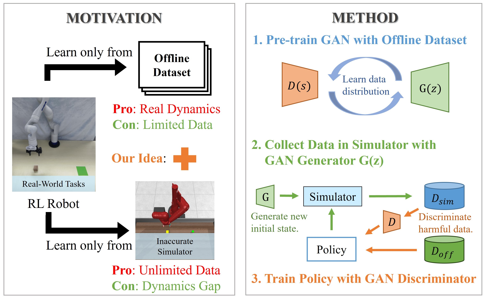
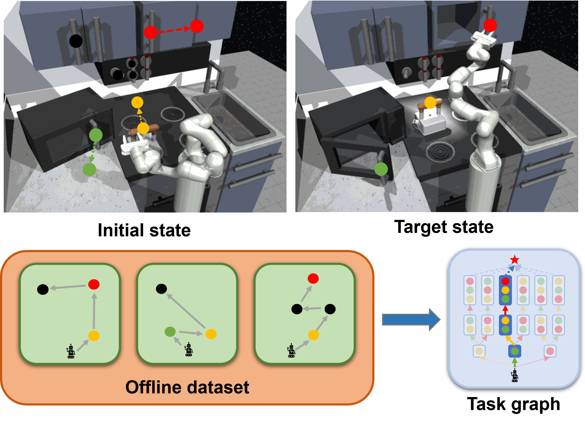

|
Yiwen Hou | 侯懿文 I am a Ph.D student at School of Computing, National University of Singapore, advised by Prof. Lin Shao. Before that, I received my Master's degree and my Bachelor's degree from the School of Computer Science and Technology, University of Science and Technology of China, advised by Prof. Feng Wu. My current research interests mainly lie in reinforcement learning and robotics. Specifically, I am interested in offline reinforcement learning. I am also interested in sim-to-real transfer, and applications in real-world robotic tasks. |
|
News
|
Research |
|

|
$\mathcal{D(R,O)}$ Grasp: A Unified Representation of Robot and Object Interaction for Cross-Embodiment Dexterous Grasping
*, *, , , , , , In Submission to International Conference on Robotics and Automation (ICRA) 2025 CoRL 2024 MAPoDeL Workshop (Best Robotics Paper Award) CoRL 2024 LFDM Workshop Website / arXiv / Code TL;DR: Introduce $\mathcal{D(R,O)}$, a novel interaction-centric representation for dexterous grasping tasks that goes beyond traditional robot-centric and object-centric approaches, enabling robust generalization across diverse robotic hands and objects. |
|  |
Improving Offline Reinforcement Learning with Inaccurate Simulators
, , , , International Conference on Robotics and Automation (ICRA) 2024 arXiv / Video TL;DR: Improve offline reinforcement learning by combining offline data with simulated data, using a GAN to align and reweight the simulated data, achieving better performance in real-world tasks. |
|  |
Effective Offline Robot Learning with Structured Task Graph
*, *, , , IEEE Robotics and Automation Letters (RA-L) 2024 IEEE / Video TL;DR: Extract the subtasks and build the structured task graph from offline datasets, then augment and relabel the datasets based on the task graph, enhancing long-horizon robot tasks. |
|
This website is designed based on Jon Barron's wetsite. Last Update: Dec, 2024 |